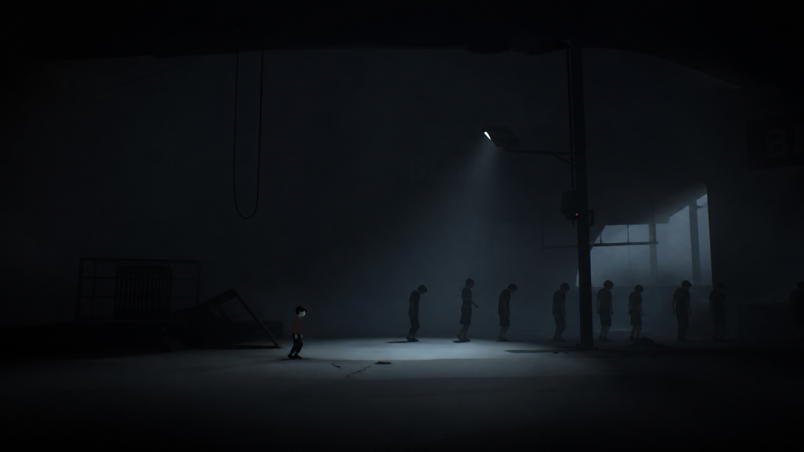

Inside é onde um garoto atravessa um mundo distópico cheio de mistérios, perigos e narrativa silenciosa, onde tudo parece estar sob controle de uma força desconhecida. Sem diálogos ou explicações diretas, o jogador explora ambientes cheios de perigos, resolvendo enigmas e tentando sobreviver enquanto foge de ameaças constantes. Ao longo da jornada, o cenário vai ficando cada vez mais estranho e perturbador, revelando indícios de experimentos e controle sobre as pessoas. A história é contada de forma visual, deixando espaço para interpretação, e aborda temas como controle, liberdade e identidade.